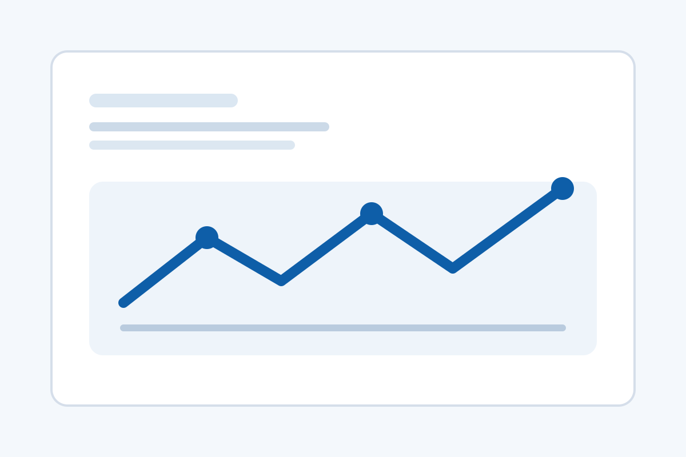

Тепличный комплекс 38 га, участок 1
Монтаж шкафов, кабельных трасс и датчиков климатического контура.
Портфолио отражает профиль компании: объекты, где требуется не просто монтаж, а координация нескольких инженерных систем и грамотный ввод их в работу.
Большая часть реализованных проектов выполняется в формате субподряда. Это означает, что компания входит в объектную команду генерального подрядчика, интегратора или производителя оборудования и берет на себя отдельный технический контур: электромонтаж, монтаж КИПиА, сборку и подключение шкафов, полевое оборудование, наладку и подготовку к запуску. Именно такой формат особенно эффективен на котельных, очистных сооружениях, ЦОД, тепличных комплексах и объектах газораспределения.
Ниже представлен каталог проектных карточек и фотогалерея с 48 позициями. Фото используются как заглушки для дальнейшей замены на реальные материалы. На закрытых объектах, особенно в газовой инфраструктуре и на отдельных инженерных узлах, публикация изображений может быть ограничена, поэтому часть описаний сознательно дается без детальной визуализации.
Промышленная автоматизация, электромонтаж промышленных объектов и монтаж КИПиА здесь рассматриваются как единый производственный процесс, а не как отдельные работы.
Каждая карточка включает название проекта, краткое описание, состав систем и год. Заглушки можно заменить на реальные фотографии без изменения структуры страницы.

Монтаж шкафов, кабельных трасс и датчиков климатического контура.
Подключение исполнительных механизмов и датчиков микроклимата.
Интеграция щитов вентиляции, отопления и полива.
Монтаж кабелей связи и силовых цепей инженерного мониторинга.
Подключение шкафов сигнализации и инженерных датчиков.
Проверка сигналов и подготовка к комплексному опробованию.
Монтаж датчиков давления, температуры и линий управления.
Сборка кабельной инфраструктуры и подключение насосов.
Пусконаладка каскадной логики и аварийных сценариев.
Монтаж уровнемеров, датчиков и шкафов насосных станций.
Прокладка контрольного кабеля и подключение исполнительных механизмов.
Настройка сигналов аварии, уровней и телеметрии.
Работы по автоматике на объекте с ограничением фотофиксации.
Подключение датчиков и дискретных цепей защитных систем.
Проверка логики взаимодействия автоматики и аварийных блокировок.
Монтаж шкафов управления и линий полевого оборудования.
Подключение преобразователей частоты и систем контроля параметров.
Комплексное опробование насосных групп и аварийных алгоритмов.
Электромонтаж кабельных трасс и подключение технологических приводов.
Монтаж датчиков положения, давления и температурных зон.
Интеграция линии в общую систему управления участка.
Подключение компрессорного оборудования и сигналов мониторинга.
Монтаж шкафов и контрольно-измерительных каналов.
Наладка сигнализации, блокировок и удаленной диспетчеризации.
Монтаж силовых и контрольных кабелей инженерных систем.
Подключение вентиляции, отопления и щитов локальной автоматики.
Проверка обмена сигналами с диспетчерским уровнем.
Установка панелей оператора, датчиков и исполнительных механизмов.
Подготовка документации и контроль маркировки кабелей.
Комплексное опробование горелочного и насосного контуров.
Подключение анализаторов и шкафов технологического учета.
Монтаж аварийной сигнализации и цепей резервирования.
Наладка насосных групп и связи с диспетчерским контуром.
Монтаж автоматики отопительных контуров и вентиляции.
Подключение узлов полива и контроля водоподготовки.
Комплексная проверка управляющих сценариев тепличных зон.
Монтаж цепей мониторинга инженерной безопасности.
Подключение оборудования вентиляции и сигналов тревог.
Пусконаладка взаимосвязанных инженерных подсистем.
Монтаж шкафов автоматики и контрольных соединений.
Проверка цепей сигнализации и логики защитных блокировок.
Интеграция локальной автоматики в систему удаленного контроля.
Подключение насосного оборудования и уровневой автоматики.
Монтаж шкафов и кабельных линий для скважинных групп.
Настройка телеметрии и удаленной сигнализации объекта.
Монтаж полевых приборов и локальной автоматики технологической зоны.
Подключение приводов, датчиков и сигнальных линий технологических механизмов.
Комплексная проверка работы оборудования после монтажа.
Посмотрите профильные направления в разделе услуг, типовые отраслевые сценарии в разделе типовых объектов и отправьте запрос через контакты.